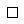
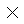
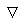
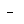
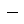
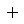
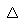

SetPointShapes — Select a point shape for each data set
$plot->SetPointShapes($pt)
SetPointShapes assigns a point shape to each data set
in a plot.
'Point' here refers to the marker drawn at each data point in 'points' and
'linepoints' type plots.
For example, if each data row contains 4 Y values, the first
point shape will be used for the first Y value, the second point shape for
the second Y value, etc. There are 20 point shapes to chose from.
$ptAn array of point shape names, or a string naming a single point shape. If a string, that shape name is used for all data sets. If an array, the array values name the point shapes for each subsequent data set in a plot. The following shapes are available:
| Shape | Shape Name | Description |
|---|---|---|
| bowtie | Two filled triangles pointing right and left towards the point. | |
|  | box | A square outline centered on the point. |
| circle | A hollow circle centered on the point. | |
|  | cross | An X centered on the point. |
| delta | A filled triangle pointing up, centered on the point. | |
| diamond | A filled diamond (square rotated 45 degrees), centered on the point. | |
| dot | A filled circle centered on the point. | |
|  | down | An unfilled triangle pointing down, centered on the point. |
|  | halfline | A short line from the point going left. |
| home | A filled 5-sided shape, centered on the point. | |
| hourglass | Two filled triangles pointing up and down towards the point. | |
|  | line | A horizontal line centered on the point. |
|  | plus | A plus sign centered on the point. |
| rect | A filled square centered on the point. | |
| star | Four lines crossing at the point. | |
| target | A square outline with two filled squares and two open squares, centered on the point. | |
| triangle | A filled triangle pointing down from the point. | |
| trianglemid | A filled triangle pointing down to the point. | |
|  | up | An unfilled triangle pointing up, centered on the point. |
| yield | A filled triangle pointing down, centered on the point. | |
| none | No marker (see notes). |
Example 5.7, “Line/Point Plot, Point Shapes” also shows all of the point shapes.
If an array is used for $pt, it
must use zero based sequential integer indexes. This is what the PHP manual
calls 'the usual integer indices (starting from zero, increasing by one)'.
This applies only to 'points' and 'linepoints' plot types.
By default, ten shapes are used in order: diamond, dot, delta, home, yield, box, circle, up, down, and cross.
A point shape can be set to 'none' to suppress the point markers for that data set. This is only useful with 'linepoints' plot types, and results in a 'lines' plot type for that data set: a line only, but no markers.
PHPlot duplicates the entries in the shorter of the two arrays, point sizes (set by SetPointSizes) and point shapes, to make both arrays the same size. Then it uses the entries in order, restarting at the beginning, for each data set at each X value. For example, if point sizes is (6, 10), and point shapes is ('diamond', 'dot', 'rect'), then PHPlot first extends point sizes to (6, 10, 6) to match the point shapes. If there are 4 data sets to plot, PHPlot draws the point markers at each X value as: diamond (size 6), dot (size 10), rect (size 6), diamond (size 6).
Through PHPlot-5.0.7, these ten shapes were available: halfline, line, plus,
cross, rect, circle, dot, diamond, triangle, trianglemid, and none. The
default shape for all data sets was 'diamond'.
Starting with PHPlot-5.1.0, ten new point shapes were added, and different shape
defaults were assigned for ten data sets.
To restore the behavior in PHPlot-5.0.7 and earlier, call
SetPointShapes('diamond').
Using 'none' as a point shape was added in PHPlot-5.0rc3.